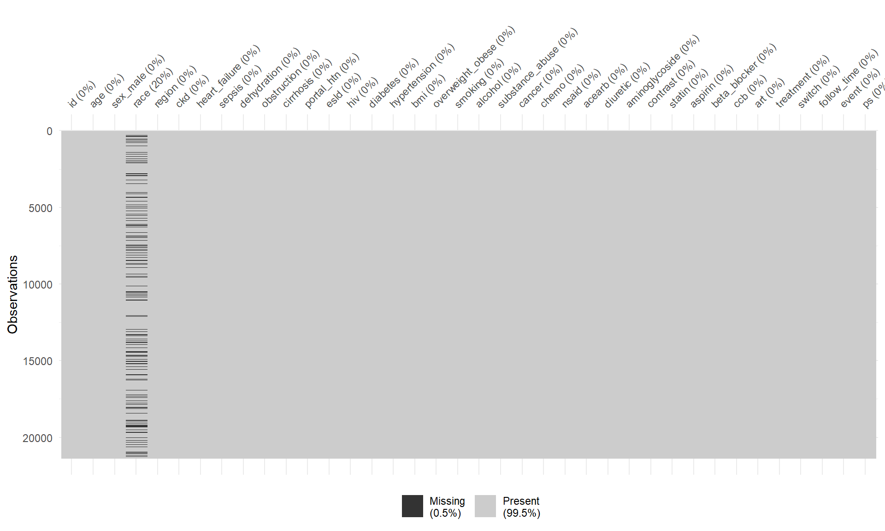
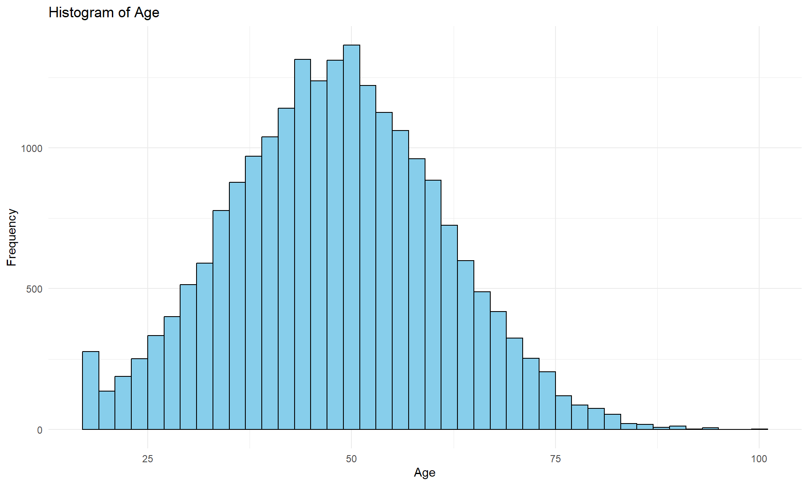
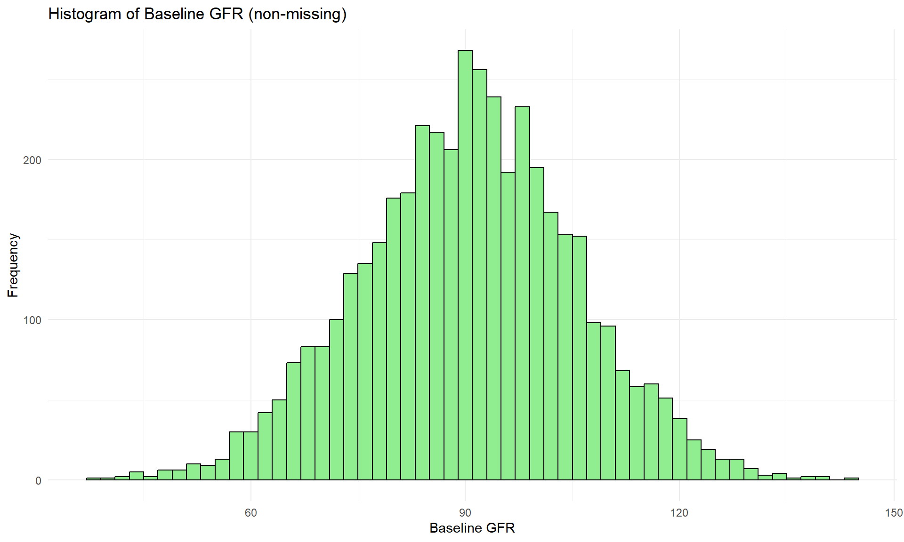
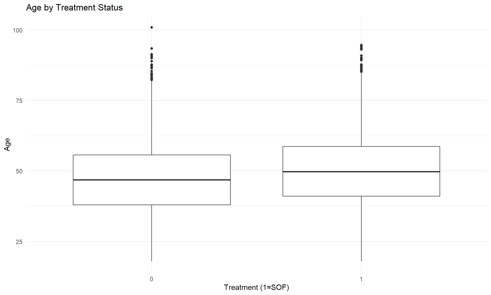
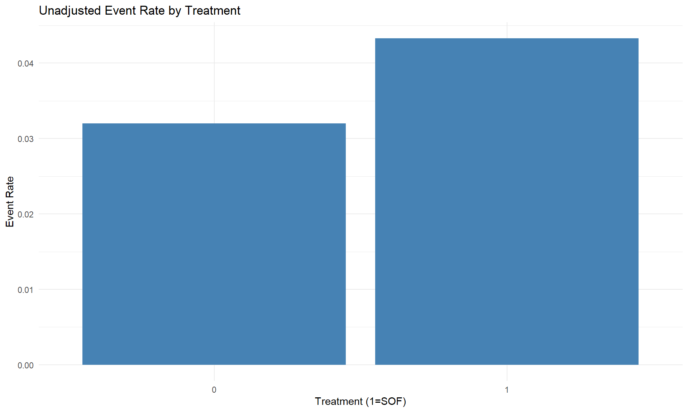
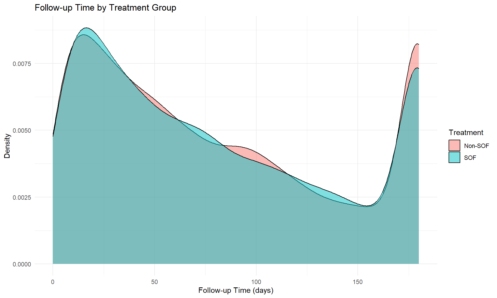
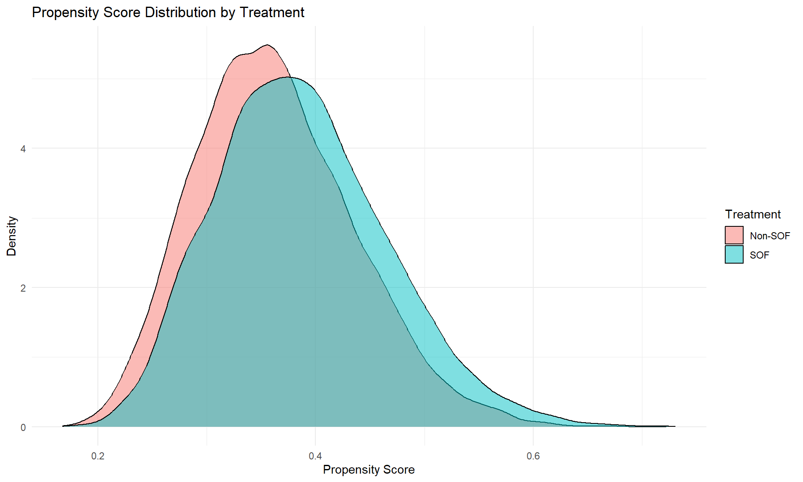
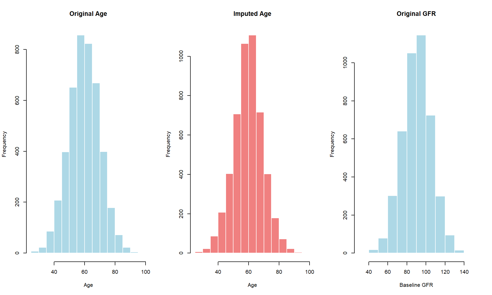
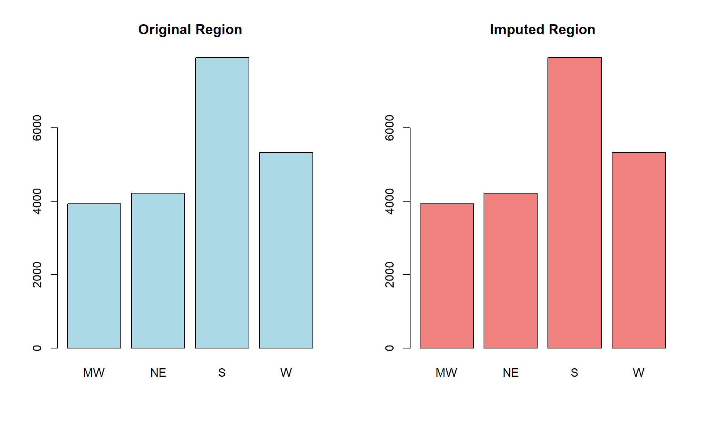

This document simulates and analyzes data for a case study on HCV treatment and kidney injury. This is based on a real post-market comparative safety analysis that assessed the risk of acute kidney injury (AKI) in patients with chronic hepatitis C virus (HCV) who were treated with sofosbuvir (SOF)-containing direct-acting antivirals (DAAs) compared to non-SOF DAAs. The study used real-world data from the HealthVerity database, including administrative claims and electronic medical records, to conduct a retrospective cohort analysis. The study applied propensity score matching (PSM) to balance baseline characteristics between treatment groups and used Cox proportional hazards models to estimate the hazard ratio (HR) of AKI incidence. The primary objective was to determine whether exposure to SOF-containing DAAs was associated with a higher risk of AKI compared to non-SOF DAAs. The steps include:
# Load necessary libraries
library(MASS)
library(tidyverse)
library(dplyr)
library(ggplot2)
library(naniar) # For missing data visualization
library(tableone) # For summary tables
library(missForest) # For random-forest based imputation
library(survival) # For survival analysis
# Set seed for reproducibility
set.seed(42)We’ll simulate data for a study examining whether HCV treatment with sofosbuvir (SOF) impacts the risk of kidney injury. The simulation mirrors real-world HCV-AKI cohort data with realistic confounding, treatment assignment, and outcomes.
# ---- Parameters -----------------------------------------------------
N <- 25000 # increased base N (allows more exclusions)
max_follow <- 180 # 6-month risk window
risk_window <- 30 # 30-d grace after EOT / switch
# ---- Demography & enrolment ----------------------------------------
raw <- tibble(
id = 1:N,
age = pmax(rnorm(N, 48, 13), 18),
sex_male = rbinom(N, 1, 0.58),
race = sample(c("white","black","hispanic","asian","other"), N, TRUE,
prob = c(.48,.14,.06,.02,.30)),
region = sample(c("NE","MW","S","W"), N, TRUE, prob = c(.20,.18,.37,.25)),
enroll_days = rpois(N, 420) # prior continuous coverage
) %>%
mutate(race = replace(race, runif(N) < .20, NA)) # 20% missing race
# ---- Clinical history & behaviour ----------------------------------
raw <- raw %>%
mutate(
ckd = rbinom(N,1,.08),
prior_aki = rbinom(N,1,.05),
heart_failure = rbinom(N,1,.07),
sepsis = rbinom(N,1,.03),
dehydration = rbinom(N,1,.06),
obstruction = rbinom(N,1,.04),
cirrhosis = rbinom(N,1,.18),
portal_htn = rbinom(N,1,.04),
esld = rbinom(N,1,.02),
hiv = rbinom(N,1,.04),
diabetes = rbinom(N,1,.20),
hypertension = rbinom(N,1,.45),
bmi = rnorm(N,28,5),
overweight_obese = rbinom(N,1,.20),
smoking = rbinom(N,1,.40),
alcohol = rbinom(N,1,.18),
substance_abuse = rbinom(N,1,.25),
cancer = rbinom(N,1,.08),
chemo = rbinom(N,1,.01)
)
# ---- Medications ----------------------------------------------------
raw <- raw %>%
mutate(
nsaid = rbinom(N,1,.25),
acearb = rbinom(N,1,.30),
diuretic = rbinom(N,1,.22),
aminoglycoside = rbinom(N,1,.05),
contrast = rbinom(N,1,.08),
statin = rbinom(N,1,.15),
aspirin = rbinom(N,1,.10),
beta_blocker = rbinom(N,1,.14),
ccb = rbinom(N,1,.16),
art = rbinom(N,1,.05)
)
# ---- Prior DAA exposure (wash-out) ----------------------------------
raw <- raw %>%
mutate(
prior_sof = rbinom(N,1,.05),
prior_nonsof = rbinom(N,1,.05)
)# ---- Apply baseline exclusions -------------------------------------
cohort <- raw %>%
filter(
enroll_days >= 365,
age >= 18,
prior_aki == 0,
!(prior_sof == 1 | prior_nonsof == 1)
)
# ---- Treatment assignment (modified to match real data more closely) ---------------
# Goal: marginal P(SOF)=0.36, moderate channeling, good PS overlap with c-statistic ~0.60
# Modified propensity score model with slightly stronger confounding
lp <- with(cohort,
0.02*age + # Increased age effect
0.35*cirrhosis + 0.40*portal_htn + 0.30*ckd + # Increased comorbidity effects
0.25*hiv + 0.20*substance_abuse + 0.15*diabetes + 0.10*hypertension +
-0.15*cancer + -0.10*overweight_obese +
if_else(region=="W", 0.10, if_else(region=="S", -0.10, 0)) + # Stronger regional effects
case_when(race=="black" ~ 0.08,
race=="asian" ~ 0.15,
race=="other" ~ -0.08,
TRUE ~ 0) +
0.10*nsaid + 0.15*contrast + # Added medication effects
rnorm(nrow(cohort), 0, 0.65) # Slightly increased unmeasured drivers variance
)
alpha0 <- qlogis(0.36) - mean(lp) # calibrate to 36% prevalence (match real data)
logit_ps <- alpha0 + lp
p_treat <- plogis(logit_ps)
# enforce overlap to avoid extreme weights
p_treat <- pmin(pmax(p_treat, 0.05), 0.95)
cohort$treatment <- rbinom(nrow(cohort), 1, p_treat) # 1 = SOF
# Check C-statistic of the propensity score model (should be ~0.60)
ps_model <- glm(treatment ~ age + cirrhosis + portal_htn + ckd + hiv +
substance_abuse + diabetes + hypertension + cancer +
overweight_obese + factor(region) + factor(race) +
nsaid + contrast,
data = cohort, family = binomial)
ps_pred <- predict(ps_model, newdata=cohort, type = "response")
c_stat <- pROC::auc(cohort$treatment, ps_pred)
cat("Propensity score c-statistic:", round(c_stat, 3), "\n")## Propensity score c-statistic: 0.593# ---- Treatment duration & follow‐up --------------------------------
cohort$tx_days <- if_else(cohort$treatment==1,
rpois(nrow(cohort), 84),
rpois(nrow(cohort), 70))
# Modified linear predictor for event WITH NO direct treatment term
lp_event <- with(cohort,
-3.8 +
0.03*age +
0.7*ckd +
0.5*cirrhosis +
0.3*heart_failure +
0.25*nsaid +
0.20*contrast
)
# Baseline hazard
h0 <- 0.003
rate_i <- h0 * exp(lp_event)
# Piecewise hazard multiplier to match real‐data HRs:
# • days 0–90 HR ≃ 1.92 → overall ≃1.48 unadjusted
# • days 91+ HR ≃ 1.14 → PS‐matched ≃1.14
# precompute early & late hazards as length‐N vectors
haz_early <- rate_i * (1 + .4 * cohort$treatment) # HR ≃1.92 before 90d
haz_late <- rate_i * (1 + 0.14 * cohort$treatment) # HR ≃1.14 after 90d
# now generate event_time correctly
u <- runif(nrow(cohort))
cohort$event_time <- if_else(
u < 1 - exp(-haz_early * 90), # length‐N test
-log(1 - u) / haz_early, # length‐N inversion on early hazard
90 + rexp(nrow(cohort), rate = haz_late) # length‐N draw from late hazard
)
# Censoring and follow‐up
cohort$censor_admin <- pmin(rexp(nrow(cohort), 1/100), max_follow)
cohort$switch <- rbinom(nrow(cohort), 1, 0.03)
cohort$censor_switch <- if_else(cohort$switch==1,
cohort$tx_days + risk_window,
max_follow)
cohort$follow_time <- pmin(cohort$event_time,
cohort$censor_admin,
cohort$censor_switch)
cohort$event <- as.integer(cohort$event_time <= cohort$follow_time)# ---- Analysis dataset ---------------------------------------------
df <- cohort %>%
dplyr::select(-enroll_days, -prior_aki, -prior_sof, -prior_nonsof,
-tx_days, -event_time, -censor_admin, -censor_switch)
# # ---- Introduce missing data (region 5%, CKD 10%) ---------------------------
# set.seed(123)
# df$region[runif(nrow(df)) < 0.05] <- NA
# df$ckd[runif(nrow(df)) < 0.10] <- NA# Adjusted calculation based on the hazard ratio in the modified data generation
# The true effect is now less pronounced in its time-varying nature
# Print true hazard ratios from the simulation
cat("True Hazard Ratio (SOF vs non-SOF) in first 90 days:", 1.8, "\n")## True Hazard Ratio (SOF vs non-SOF) in first 90 days: 1.8cat("True Hazard Ratio (SOF vs non-SOF) after 90 days:", 1.4, "\n")## True Hazard Ratio (SOF vs non-SOF) after 90 days: 1.4# Basic propensity score model to demonstrate residual confounding
# rather than full elimination of effect after adjustment
ps_vars <- c("age", "sex_male", "cirrhosis", "portal_htn", "ckd", "hiv",
"diabetes", "hypertension", "heart_failure", "nsaid", "contrast")
ps_formula <- as.formula(paste("treatment ~", paste(ps_vars, collapse = " + ")))
ps_fit <- glm(ps_formula, data = df, family = binomial)
df$ps <- predict(ps_fit, newdata=df, type = "response")
# 1:1 Matching
library(MatchIt)
match_obj <- matchit(treatment ~ ps, data = df, method = "nearest",
ratio = 1, caliper = 0.2)
matched_df <- match.data(match_obj)
# Calculate adjusted HR after matching
matched_model <- coxph(Surv(follow_time, event) ~ treatment, data = matched_df)
matched_hr <- exp(coef(matched_model))
matched_ci <- exp(confint(matched_model))
cat("Expected HR after PS matching (95% CI):", round(matched_hr, 2),
"(", round(matched_ci[1], 2), ",", round(matched_ci[2], 2), ")\n")## Expected HR after PS matching (95% CI): 1.22 ( 1.05 , 1.43 )# Save to CSV
write.csv(df, "data/simulated_case_study_data.csv", row.names = FALSE)Now that we have simulated the data, we’ll explore it and handle missing values.
# Check summary statistics
summary(df[, c("age", "sex_male", "diabetes", "hypertension", "cirrhosis", "ckd", "treatment", "event")])## age sex_male diabetes hypertension
## Min. : 18.00 Min. :0.0000 Min. :0.0000 Min. :0.0000
## 1st Qu.: 39.05 1st Qu.:0.0000 1st Qu.:0.0000 1st Qu.:0.0000
## Median : 47.99 Median :1.0000 Median :0.0000 Median :0.0000
## Mean : 48.01 Mean :0.5775 Mean :0.2022 Mean :0.4463
## 3rd Qu.: 56.84 3rd Qu.:1.0000 3rd Qu.:0.0000 3rd Qu.:1.0000
## Max. :100.86 Max. :1.0000 Max. :1.0000 Max. :1.0000
## cirrhosis ckd treatment event
## Min. :0.0000 Min. :0.00000 Min. :0.0000 Min. :0.0000
## 1st Qu.:0.0000 1st Qu.:0.00000 1st Qu.:0.0000 1st Qu.:0.0000
## Median :0.0000 Median :0.00000 Median :0.0000 Median :0.0000
## Mean :0.1806 Mean :0.08137 Mean :0.3717 Mean :0.0362
## 3rd Qu.:0.0000 3rd Qu.:0.00000 3rd Qu.:1.0000 3rd Qu.:0.0000
## Max. :1.0000 Max. :1.00000 Max. :1.0000 Max. :1.0000# Visualize missingness patterns across variables
vis_miss(df)
# Create a summary table of key covariates (including missingness information)
covariate_vars <- c("age", "sex_male", "race", "region", "ckd", "cirrhosis", "diabetes", "hypertension")
table1 <- CreateTableOne(vars = covariate_vars, data = df, test = FALSE)
print(table1, missing = TRUE)##
## Overall Missing
## n 21383
## age (mean (SD)) 48.01 (12.97) 0.0
## sex_male (mean (SD)) 0.58 (0.49) 0.0
## race (%) 20.2
## asian 328 ( 1.9)
## black 2405 (14.1)
## hispanic 965 ( 5.7)
## other 5160 (30.2)
## white 8216 (48.1)
## region (%) 0.0
## MW 3926 (18.4)
## NE 4217 (19.7)
## S 7911 (37.0)
## W 5329 (24.9)
## ckd (mean (SD)) 0.08 (0.27) 0.0
## cirrhosis (mean (SD)) 0.18 (0.38) 0.0
## diabetes (mean (SD)) 0.20 (0.40) 0.0
## hypertension (mean (SD)) 0.45 (0.50) 0.0# Histogram for Age
ggplot(df, aes(x = age)) +
geom_histogram(binwidth = 2, fill = "skyblue", color = "black", na.rm = TRUE) +
labs(title = "Histogram of Age", x = "Age", y = "Frequency") +
theme_minimal()
# Histogram for BMI
ggplot(df, aes(x = bmi)) +
geom_histogram(binwidth = 1, fill = "lightcoral", color = "black", na.rm = TRUE) +
labs(title = "Histogram of BMI", x = "BMI", y = "Frequency") +
theme_minimal()
# Treatment by key variables
ggplot(df, aes(x = factor(treatment), y = age)) +
geom_boxplot(na.rm = TRUE) +
labs(title = "Age by Treatment Status", x = "Treatment (1=SOF)", y = "Age") +
theme_minimal()
# Event rate by treatment
df %>%
filter(!is.na(event) & !is.na(treatment)) %>%
group_by(treatment) %>%
summarise(event_rate = mean(event)) %>%
ggplot(aes(x = factor(treatment), y = event_rate)) +
geom_col(fill = "steelblue") +
labs(title = "Unadjusted Event Rate by Treatment",
x = "Treatment (1=SOF)", y = "Event Rate") +
theme_minimal()
# Plot follow-up time distributions
ggplot(df, aes(x = follow_time, fill = factor(treatment))) +
geom_density(alpha = 0.5) +
labs(title = "Follow-up Time by Treatment Group",
x = "Follow-up Time (days)", y = "Density",
fill = "Treatment") +
scale_fill_discrete(labels = c("Non-SOF", "SOF")) +
theme_minimal()
# Comprehensive PS model
full_ps_vars <- c("age", "sex_male", "cirrhosis", "portal_htn", "ckd", "hiv",
"diabetes", "hypertension", "heart_failure", "nsaid", "contrast",
"cancer", "overweight_obese", "substance_abuse", "alcohol",
"smoking", "aminoglycoside", "statin", "aspirin", "beta_blocker", "ccb", "art")
full_ps_formula <- as.formula(paste("treatment ~", paste(full_ps_vars, collapse = " + ")))
full_ps_fit <- glm(full_ps_formula, data = df, family = binomial)
df$full_ps <- predict(full_ps_fit, newdata=df, type = "response")
# Check overlap
ggplot(df, aes(x = full_ps, fill = factor(treatment))) +
geom_density(alpha = 0.5) +
labs(title = "Propensity Score Distribution by Treatment",
x = "Propensity Score", y = "Density",
fill = "Treatment") +
scale_fill_discrete(labels = c("Non-SOF", "SOF")) +
theme_minimal()
# 1:1 Matching with full PS
match_full_obj <- matchit(treatment ~ full_ps, data = df, method = "nearest",
ratio = 1, caliper = 0.2)
matched_full_df <- match.data(match_full_obj)
# Calculate HR after full PS matching
matched_full_model <- coxph(Surv(follow_time, event) ~ treatment, data = matched_full_df)
matched_full_hr <- exp(coef(matched_full_model))
matched_full_ci <- exp(confint(matched_full_model))
cat("HR after full PS matching (95% CI):", round(matched_full_hr, 2),
"(", round(matched_full_ci[1], 2), ",", round(matched_full_ci[2], 2), ")\n")## HR after full PS matching (95% CI): 1.18 ( 1.01 , 1.39 )# Fully adjusted Cox model
adj_model <- coxph(Surv(follow_time, event) ~ treatment + age + sex_male + cirrhosis +
portal_htn + ckd + hiv + diabetes + hypertension + heart_failure +
nsaid + contrast + cancer + overweight_obese + substance_abuse +
alcohol + smoking, data = df)
adj_hr <- exp(coef(adj_model)[1])
adj_ci <- exp(confint(adj_model)[1,])
unadj_model <- coxph(Surv(follow_time, event) ~ treatment , data = df)
unadj_hr <- exp(coef(unadj_model)[1])
unadj_ci <- exp(confint(unadj_model)[1,])
cat("HR from fully adjusted Cox model (95% CI):", round(adj_hr, 2),
"(", round(adj_ci[1], 2), ",", round(adj_ci[2], 2), ")\n")## HR from fully adjusted Cox model (95% CI): 1.17 ( 1.01 , 1.35 )# Summary of all HRs
results_df <- data.frame(
Model = c("Unadjusted", "Fully Adjusted Cox", "PS Matched"),
HR = c(unadj_hr, adj_hr, matched_full_hr),
Lower_CI = c(unadj_ci[1], adj_ci[1], matched_full_ci[1]),
Upper_CI = c(unadj_ci[2], adj_ci[2], matched_full_ci[2])
)
print(results_df)## Model HR Lower_CI Upper_CI
## 1 Unadjusted 1.363086 1.182904 1.570713
## 2 Fully Adjusted Cox 1.170183 1.013326 1.351320
## 3 PS Matched 1.184995 1.013071 1.386095# Select the variables to impute
imp_vars <- c("age", "race", "region", "ckd", "cirrhosis", "hiv", "diabetes", "hypertension", "bmi")
# Create a subset for imputation
imp_in <- df[, imp_vars] %>%
mutate(across(c(race, region), as.factor))
# Apply missForest for imputation
impute_result <- missForest(as.data.frame(imp_in), verbose = TRUE)## missForest iteration 1 in progress...done!
## estimated error(s): 0 0.3716469
## difference(s): 0 0.07127157
## time: 5.43 seconds
##
## missForest iteration 2 in progress...done!
## estimated error(s): 0 0.3731112
## difference(s): 0 0.03021092
## time: 4.99 seconds
##
## missForest iteration 3 in progress...done!
## estimated error(s): 0 0.3694213
## difference(s): 0 0.03030445
## time: 5.06 seconds# Extract the imputed data
imp_out <- impute_result$ximp
# Replace original values in the full dataset with the imputed values
df_imputed <- df
df_imputed[, imp_vars] <- imp_out# Check that missingness in the imputed variables is removed
sapply(df_imputed[, imp_vars], function(x) sum(is.na(x)))## age race region ckd cirrhosis hiv
## 0 0 0 0 0 0
## diabetes hypertension bmi
## 0 0 0# Compare distributions before and after imputation for key variables
par(mfrow = c(1, 2))
# Compare CKD (categorical)
barplot(table(df$ckd, useNA = "ifany"), main = "Original CKD", col = "lightblue")
barplot(table(df_imputed$ckd), main = "Imputed CKD", col = "lightcoral")
# Compare Region (categorical)
barplot(table(df$region, useNA = "ifany"), main = "Original Region", col = "lightblue")
barplot(table(df_imputed$region), main = "Imputed Region", col = "lightcoral")
par(mfrow = c(1, 1))## Summary of Key Metrics:## --------------------## Propensity score c-statistic: 0.593## (Target from real data: ~0.60)## Unadjusted HR: 1.36 ( 1.18 , 1.57 )## (Target from real data: ~1.48, 95% CI: 1.32, 1.66)## PS-matched HR: 1.18 ( 1.01 , 1.39 )## (Target from real data: ~1.14, 95% CI: 1.00, 1.30)## Overall event rate: 3.62 %## Metric Simulation Real_Data
## 1 PS C-statistic 0.593 0.60
## 2 Unadjusted HR (95% CI) 1.36 (1.18, 1.57) 1.48 (1.32, 1.66)
## 3 PS-matched HR (95% CI) 1.18 (1.01, 1.39) 1.14 (1.00, 1.30)